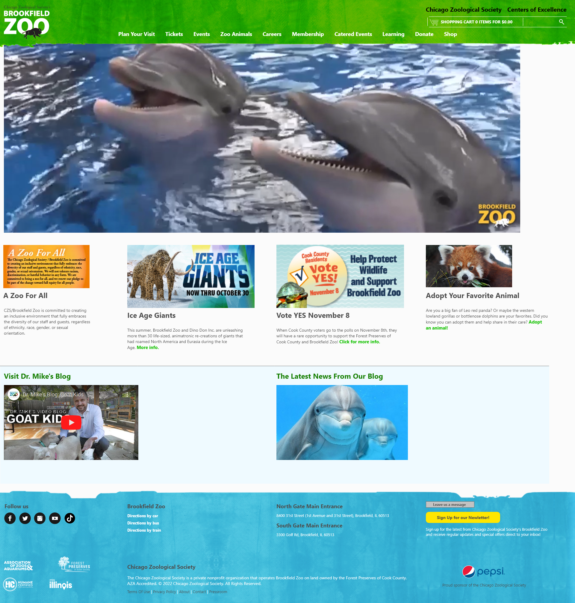

My recommendations for accessibility on this website would mainly include:
- Going with a consistent color on the footer. Either darkening the blue so that the white text comes through for readability, or vice versa.
- Since I ues Firefox, the page needed to be loaded in Chrome to be viewed properly. I would do the CSS steps to clear out browser-CSS and build the site so it is similar on all browsers from there.